Our Premium Services
Complete modern dental solutions.
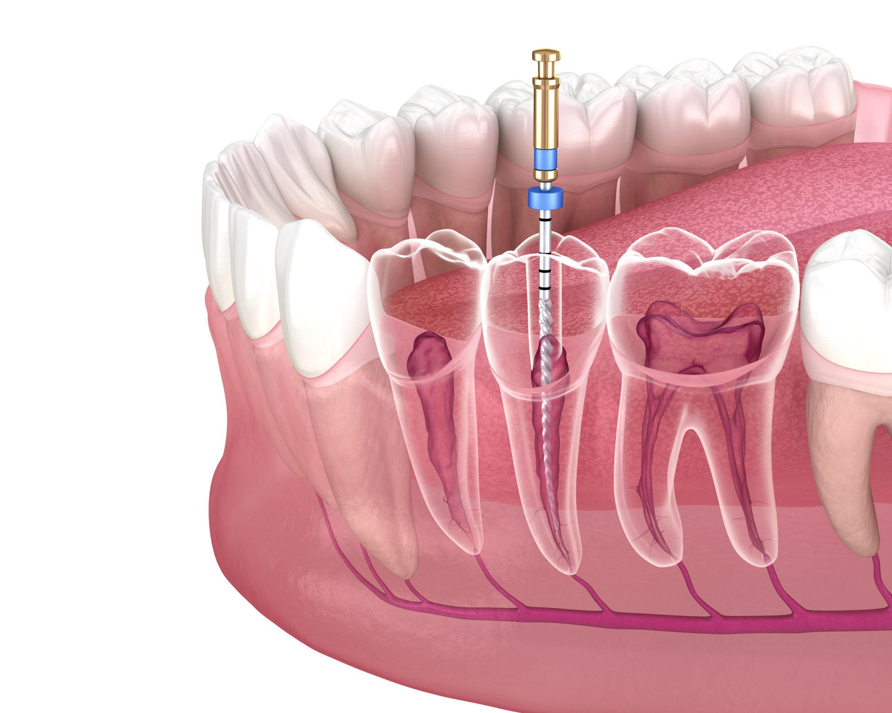
Root Canal Treatment
Advanced painless root canal procedures for infected teeth.
Read More →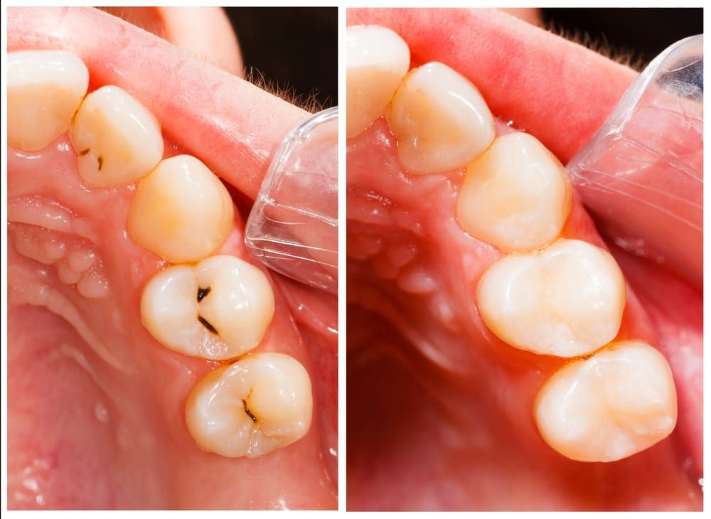
Tooth Fillings
Tooth coloured fillings for cavity repair and smile restoration.
Read More →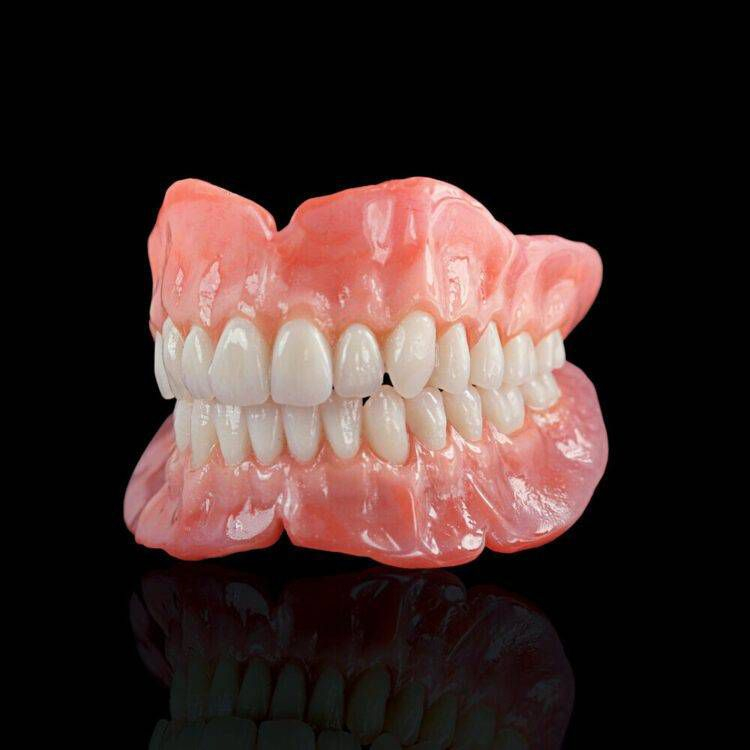
Dentures
Comfortable removable tooth replacement solutions.
Read More →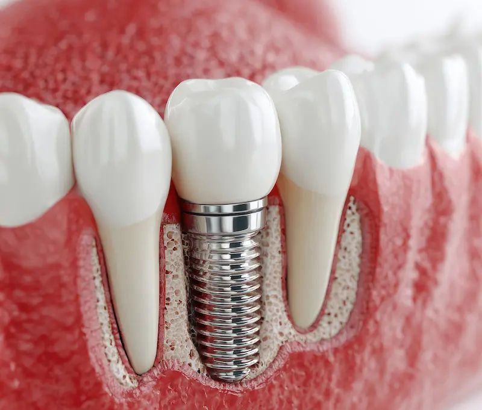
Dental Implants
Permanent natural looking tooth replacement treatment.
Read More →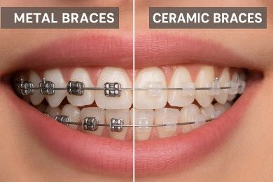
Teeth Braces
Orthodontic correction for properly aligned teeth.
Read More →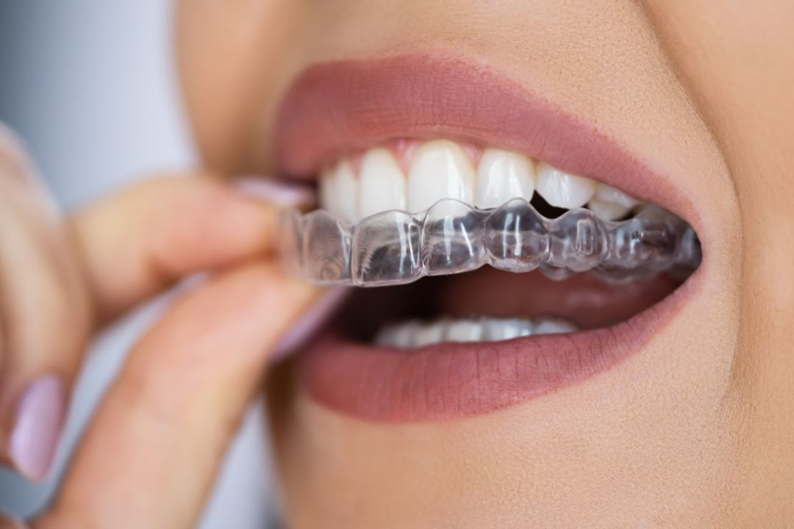
Clear Aligners
Invisible modern teeth straightening treatment.
Read More →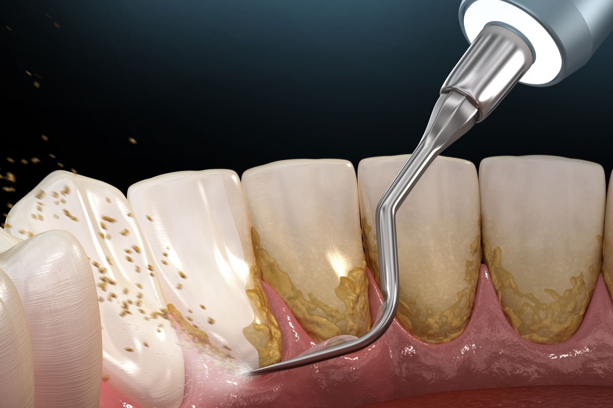
Teeth Cleaning
Professional dental cleaning for plaque removal.
Read More →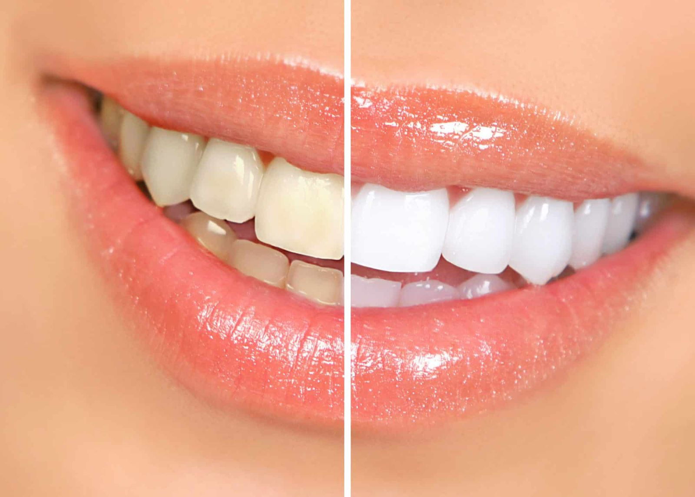
Teeth Whitening
Bright smile enhancement with safe whitening treatment.
Read More →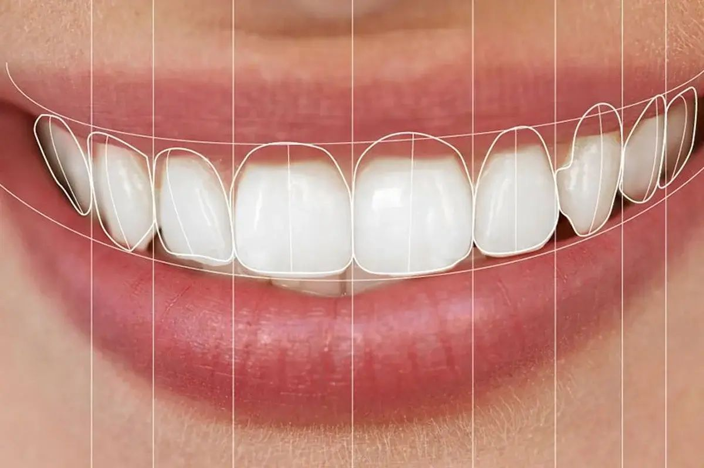
Smile Designing
Cosmetic smile makeover for confidence and aesthetics.
Read More →
Dental Crown and Bridges
Natural looking crowns and bridges to restore damaged or missing teeth.
Read More →
Pediatric Dentistry
Gentle dental care for children focused on healthy growing smiles.
Read More →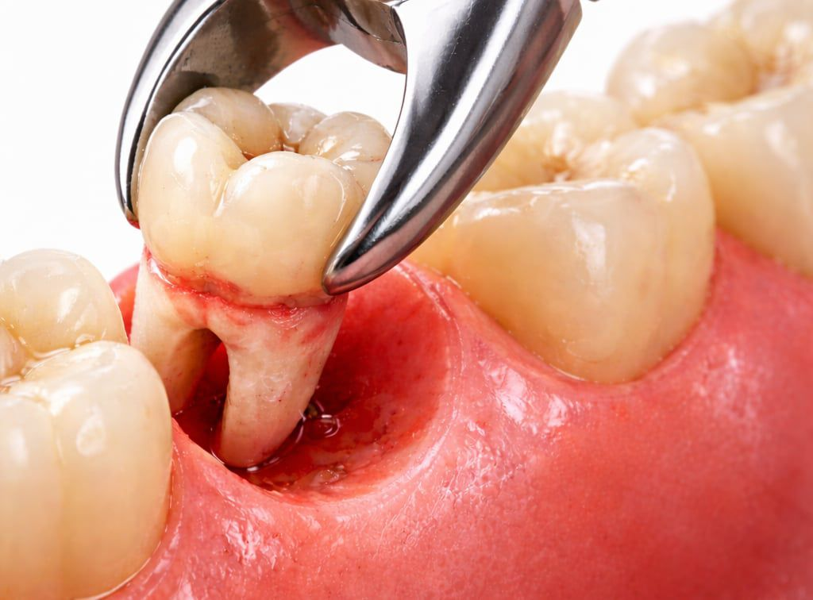
Tooth Extraction
Safe painless tooth removal procedures.
Read More →
Full Mouth Reconstruction
Comprehensive restoration of damaged teeth, bite and smile function.
Read More →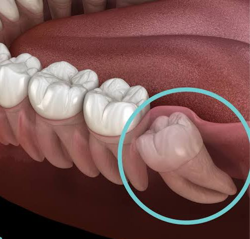
Wisdom Tooth Removal
Safe, painless wisdom tooth extraction for simple or complex cases in a stress-free environment.
Read More →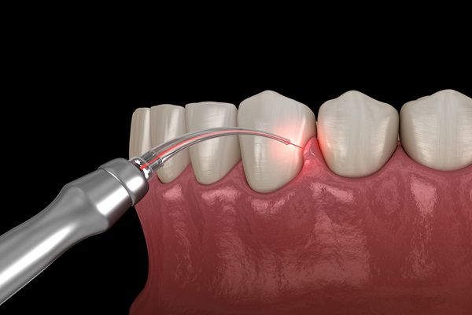
Gums Treatment
Comprehensive therapies to restore and protect your gum health.
Read More →